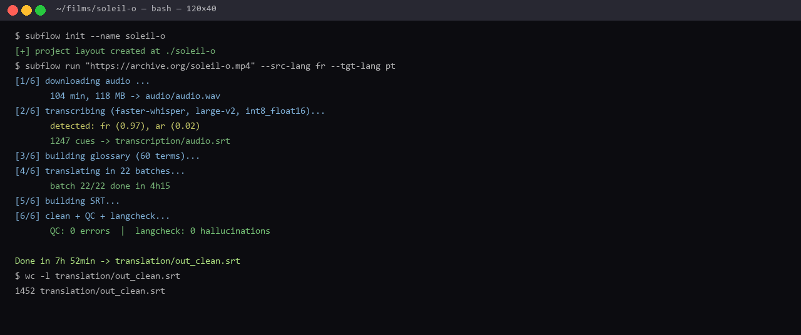

Transcreva, traduza, limpe e revise legendas com QC estilo Netflix — sem enviar seu vídeo para ninguém. Um comando. Um arquivo SRT perfeito.
QUERO O SUBFLOW — US$ 9,99Licença Lite · US$ 9,99 (à vista) · Acesso imediato · Garantia de 7 dias

Whisper local (large-v2, int8_float16) com filtro de silêncio. Roda até em GPU de 4 GB.
Qualquer par de idiomas (100+). Você revisa em lotes — a IA traduz, você decide.
Máx. 42 chars/linha, 2 linhas, CPS ≤ 17/20, sem sobreposições. Relatório automático de cada violação.
langcheck detecta quando o Whisper "inventa" texto em outro idioma — o erro mais caro de legendagem.
Seu vídeo nunca sai da sua máquina. Ideal para clientes jurídicos, médicos e corporativos.
Documentário de 104 min: 14h → 7h50 de trabalho, com a mesma qualidade.
$ subflow run "video.mp4" --src-lang fr --tgt-lang pt [1/6] downloading audio ......... done [2/6] transcribing (large-v2, int8_float16) ... 1247 cues [3/6] building glossary (60 terms) ... done [4/6] translating in 22 batches ... done [5/6] building SRT ... done [6/6] clean + QC + langcheck ... 0 errors Done in 7h 52min -> translation/out_clean.srt
Caso real: documentário de Med Hondo (1977), francês → português, legendado em 7h50 com QC sem erros.
Porque legendagem profissional não é só transcrever — é controlar leitura, tempo e qualidade.
| Recurso | SubFlow | Subtitle Edit | Descript | Whisper API |
|---|---|---|---|---|
| Custo por vídeo | US$ 0 | US$ 0 | US$ 24/mês | ~US$ 1/filme |
| Privacidade | ✅ 100% local | ✅ local | ❌ upload | ❌ upload |
| Tradução automática | ✅ em lotes | ❌ | ✅ | ❌ |
| QC automático (CPS, chars, overlap) | ✅ estilo Netflix | ⚠️ parcial | ⚠️ parcial | ❌ |
| Detecção de alucinação ASR | ✅ langcheck | ❌ | ❌ | ❌ |
| Pipeline 1 comando | ✅ | ❌ | ❌ | ❌ |
| Licença | MIT | GPL | proprietária | proprietária |
"Legendei um documentário de 104 min em 7h50 — antes eram 14 horas. O QC estilo Netflix me salvou de pelo menos 30 erros de leitura."
Tradutor audiovisual · PT-BR
★ Caso real do projeto
"Precisava de privacidade total para material clínico. O SubFlow roda 100% local — nenhum vídeo saiu da minha máquina."
Produtora de conteúdo médico
★ Privacidade
"O langcheck pegou uma alucinação do Whisper que teria ido para o ar: um canto em árabe transcrito como francês inventado."
Editor de documentários
★ Anti-alucinação
Se o SubFlow não servir para o seu fluxo, devolvemos 100% do valor. Sem perguntas, sem burocracia — direto no suporte da Hotmart.
Não. Funciona em CPU (mais lento) e tem suporte a GPU com int8_float16 — roda até em placas de 4 GB (ex.: RTX 3050).
Transcrição: os idiomas do Whisper (90+). Tradução: qualquer par de idiomas (100+), incluindo árabe, mandarim, japonês e russo.
Não. Tudo roda localmente na sua máquina. Sem upload, sem nuvem, sem custo por minuto.
Sim. Python 3.10+ com binários standalone disponíveis para as três plataformas.
Você tem 7 dias de garantia incondicional. Peça reembolso e devolvemos 100%.
A Lite (US$ 9,99) é para uso individual. A comercial (US$ 49,90) permite revender o serviço de legendagem para clientes.
Transcrição + tradução + QC profissional, 100% local, por menos que o custo de 10 filmes na API do Whisper.
QUERO O SUBFLOW — US$ 9,99Acesso imediato após a compra · Garantia de 7 dias · Suporte por e-mail
SubFlow é open source (MIT) — github.com/IcaroPv01/subflow